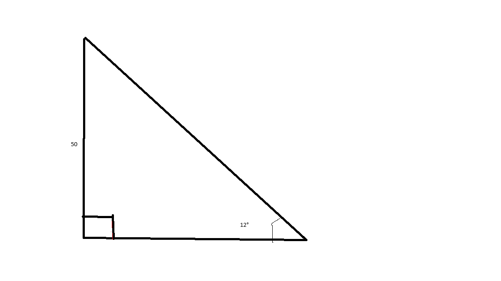

Take a look at this picture:

As you can hopefully -_- see, in the picture, there is an angle of 12 degrees as theta and a side length of 50 units.
Question: Use your knowledge of the trigonometric functions to find the length of the hypotenuse leg.
Answer: To find the missing side, again we need to use the sine function because that is the function that has the hypotenuse leg and the only other leg we have, the opposite leg. Then we take the sine of 12 degrees, equal to 0.20791169081. Now we know that 0.20791169081 equals hyp/50. To find hyp, we can use this equasion: 50 * 0.20791169081 = hyp. 50 * 0.20791169081 = 10.3955845405. That determines the side length.